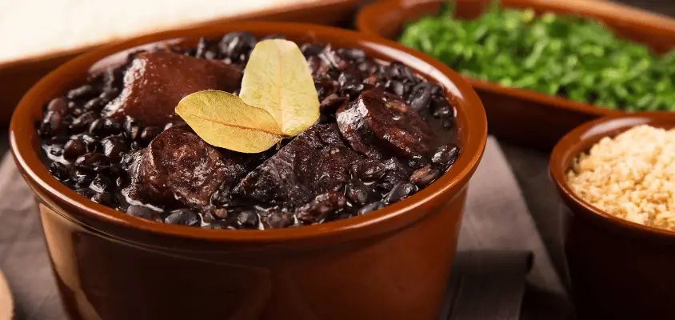
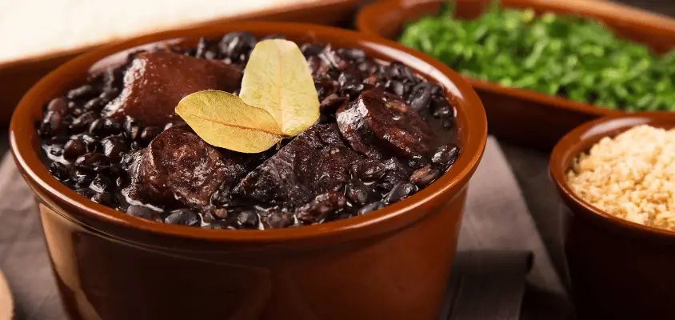

Tradições e Festas
O Rio de Janeiro é um estado repleto de cultura e tradição. Suas raízes culturais são uma mistura de influências africanas, europeias e indígenas, refletindo-se em festas e celebrações conhecidas mundialmente. O Carnaval do Rio é um dos maiores eventos do planeta, com desfiles grandiosos das escolas de samba na Marquês de Sapucaí e blocos de rua que atraem milhões de foliões, formando uma festa vibrante e inesquecível.
Outro evento importante é o Réveillon em Copacabana, celebrado com uma impressionante queima de fogos à beira-mar. Milhares de pessoas se vestem de branco para desejar paz e boas energias para o ano novo, em um espetáculo visual e cultural que marca a passagem do ano na cidade maravilhosa. Além disso, o Rio celebra festas tradicionais como a Festa de São Sebastião, padroeiro da cidade, com missas e procissões em sua homenagem.
Pratos típicos
A culinária carioca é rica e diversificada, com influências de várias regiões do Brasil e do mundo. Um dos pratos mais icônicos é a feijoada, feita com feijão preto e carnes variadas, servida com arroz, couve, farofa e laranja. A feijoada é tradicionalmente consumida aos sábados, tornando-se um verdadeiro evento gastronômico e social para os cariocas.
Outro destaque é o bolinho de bacalhau, um petisco saboroso que tem suas raízes na culinária portuguesa. A moqueca carioca, embora menos famosa que a versão baiana, também tem seu lugar, preparada com peixe fresco, leite de coco e temperos especiais. Outros pratos populares incluem o caldinho de feijão e o churrasco, que são comuns em reuniões e celebrações.
| Prato | Descrição |
|---|---|
| Feijoada | Feijão preto com carnes variadas, servido com arroz, couve e laranja. Prato tradicional dos sábados cariocas. |
| Bolinho de Bacalhau | Petisco de bacalhau desfiado com batatas e temperos, geralmente servido com limão. |
| Moqueca Carioca | Ensopado de peixe com leite de coco e temperos locais, servido com arroz. |
 
